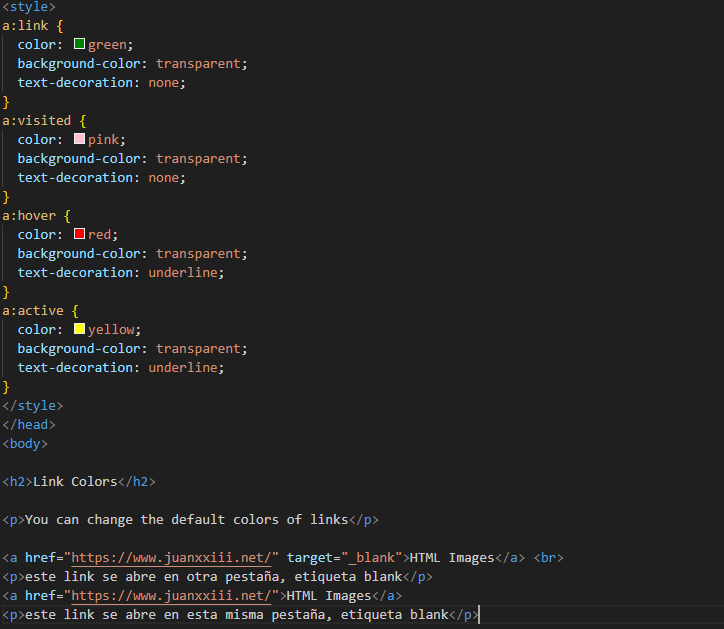

You can change the default colors of links
HTML Imageseste link se abre en otra pestaña, etiqueta blank
HTML Images list-style-typeeste link se abre en esta misma pestaña, etiqueta blank cambiar el titulo y el logo de una pagina web , Etiquetas: tittle, link rel